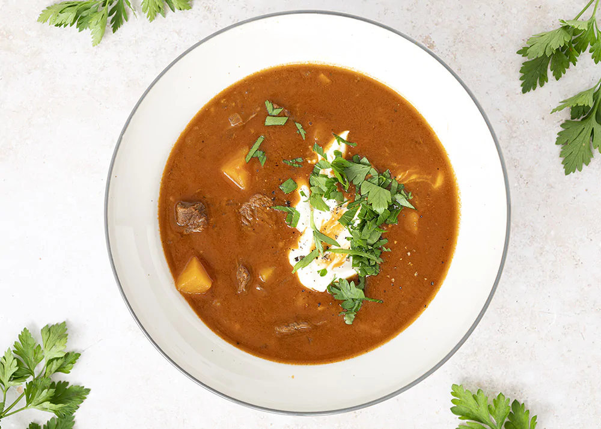

Home
Kødsovs

Gullash Soup is often enjoyed in colder weather.
Its the perfect comfort food
Ingredients
- Chopped beef
- Potatoes
- Chopped tomatoes
- Carrots
- Paprika
- Sour cream
Steps
- Brown the minced meat
- Add the chopped tomatoes, potatoes, paprika, carrots and water
- Let simmer for 1 hour
- Serve while hot with sour cream